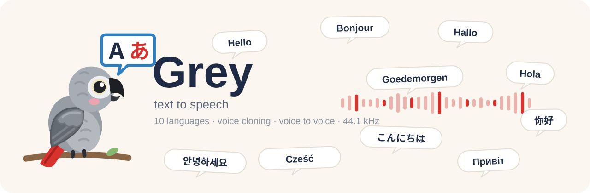

🌍 Ten languages
Grey v16+ with its three made-up voices (Jonas, Lena and Daan: not real people). First takes, except Spanish and Chinese (a word slip, so the next take).
🎛️ Ways of speaking
The same model, steered with its delivery controls.
🏷️ Everything on this page is AI-generated speech, made by Grey. The files carry an AI label and an inaudible watermark, as the EU AI Act asks.